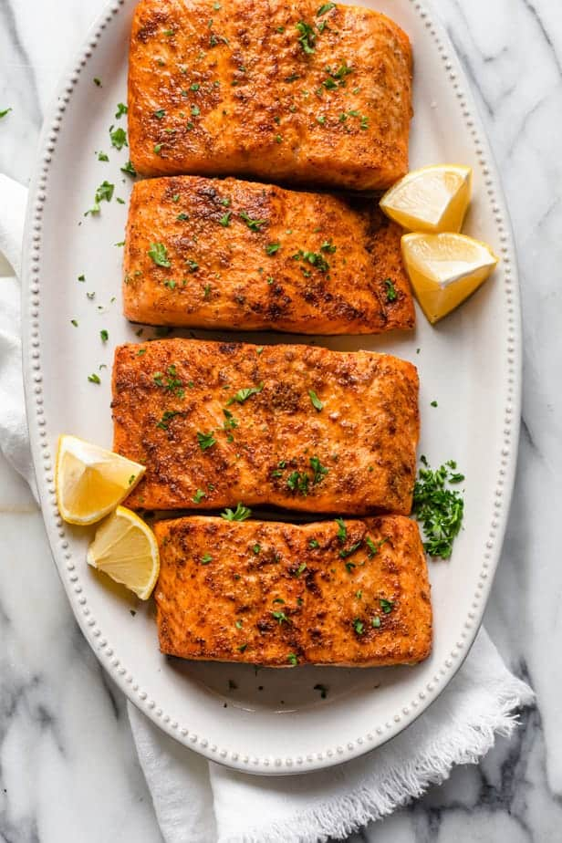

Air Fryer Salmon

Air Fryer Salmon is a quick and easy way to cook salmon, which results in seared edges and tender, flaky center. Ready in 10 minutes, low carb & low calorie
Ingredients
- 4 salmon filets (6oz each)
- 1 tbsp olive oil
- 1 tsp garlic powder
- 1/2 tsp paprika
- salt & pepper to taste
- Preheat the air fryer to 400°F.
- Rub each fillet with olive oil and season with garlic powder, paprika, salt and pepper. Place the salmon in the air fryer and air fry for 7-9 minutes, depending on this thickness of the salmon. Please note, time may vary between air fryers.
- Open basket and check for desired doneness with a fork. You can return the salmon for another 1 or 2 minutes as necessary.